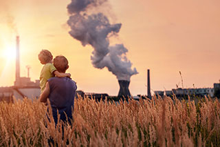
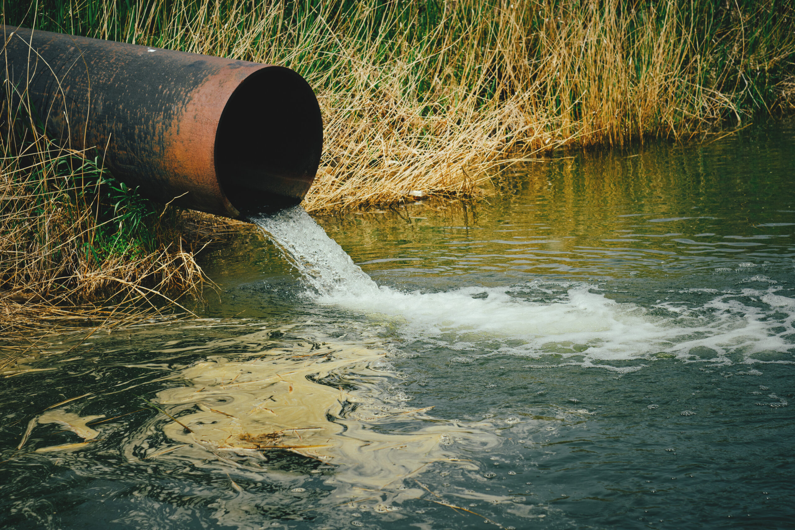

Protect Our Environment
Protecting the environment is a responsibility we all share. By reducing waste, recycling, conserving water, and using clean energy, we can help create a healthier planet for future generations. Small actions taken by millions of people can make a big difference. Together, we can protect nature, reduce pollution, and build a more sustainable world.

Air Pollution
Air pollution is a major environmental problem that affects the health of people and ecosystems around the world. It is caused by harmful substances released into the atmosphere from vehicles, factories, power plants, and the burning of fossil fuels. Air pollution can lead to serious health issues, including asthma, lung diseases, heart problems, and premature death. It also contributes to climate change and damages plants, animals, and natural habitats. Reducing air pollution requires the use of cleaner energy sources, improved public transportation, and responsible environmental practices. Protecting air quality is essential for creating a healthier and more sustainable future for everyone.

Water Pollution
Clean water is one of the most important resources for life on Earth. It is essential for drinking, cooking, agriculture, sanitation, and maintaining good health. Access to clean water helps prevent diseases such as cholera, typhoid, and diarrhea, which are often caused by contaminated water sources. Unfortunately, pollution from industries, agriculture, and household waste threatens water quality in many parts of the world. Protecting rivers, lakes, and groundwater from pollution is necessary to ensure that future generations have access to safe and clean water. By conserving water and reducing pollution, individuals and communities can help preserve this vital resource.